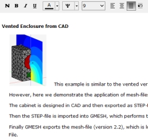

Info Editor
 The Info Page allows to annotate your project.The text editor provides text formatting and pictures in form of bitmaps (jpg, png, bmp). With regard to file size it is recommended to crop and down-sample bitmaps if necessary with the help of other software. Commands of the editor you find at menu Edit and at the editors button-bar. Sub-menu Tools/Info Editor/ offers forms, import and printing tools. CommandsMenu EditUndo will replace text with previous version. Copy will place selected text to the clipboard. Cut is similar to Copy, however selected text gets deleted after Copy. Paste inserts text or picture from the Clipboard into the editor at edit-position. Select all yields the whole of the text to be selected. Button-BarN assigns default font format to selection. The default font format can be specified at menu Tools/Info Editor/Layout.... B renders selected text in bold type face. I renders selected text in italic type face. U underlines selected text. A assigns color to selected text. Ψ opens a selection of symbols to be placed at cursor position. Font size provides a quick way to set the font size of selected text. Left align renders the paragraph aligned to the left border. Centered renders the paragraph centered. Justified renders the paragraph justified to left and right border. Default paragraph resets format of paragraph to default, which can be specified at menu Tools/Info Editor/Layout.... FormsForms of the editor can be called at menu Tools/Info Editor. FontOpens a form for assigning a collection of text-formats to selected text. The type face can be Bold, Italics and Underlined. Size specifies the font-size of the text. Color provides a means to set the color of the text. Font Names selects the font-face of the text. Check Show symbol-fonts if the list should also display fonts with symbols (♣ ∑ etc). ParagraphOpens a form for assigning a collection of paragraph-settings to selected text. Alignment adjusts the text to the left border, centered or justified. Spacing is the space to the next paragraph. It is measured in font-points, for example, a font of size 10 has 10 font-points. Line Spacing controls the space between the lines. Indentation is the space in millimeter to the border on the left and right hand side. First Line is the indentation of the first line relative to Left. The value of First Line can be negative. Use paragraph of default setting will assign paragraph settings as specified in the Layout-Form (see below). LayoutFormatting PageThis page specifies the default font and paragraph settings. The input fields are similar to forms for setting individual font and paragraph formatting (see above). Printing PageThis page lets you specify the paper-format of printing.
The effect of these settings are visible only at feature Printing (see below). Find and ReplaceOpens a form for finding or replacing text. This form is non-modal. The form is provided by the OS and its appearance might vary from computer to computer. Search text is the text which is to be found. Replace by is the new text which will be substituted. Search This button starts or continues the search. Replace This button searches and replaces only the next item. Replace all will replace all findings down from the current position of the cursor. Only whole words will find only words surrounded by blanks or new lines. Case sensitive takes into account the case of the characters. Prints document to paper or pdf. Before the actual printing starts
a preview opens where you can select typical printing options. ImportOpens a document from file. The file-format should be one of the following:
Text (*.txt)
Rich Text Format (*.rtf)
Rich View Format (*.rvf)
The last (rvf) is the native format of this editor and can be used for saving the
text at Export. The Rich Text Format (rtf) is similar, it is supported by word-processors.
Note, that the editor can render a wide range of formatting items such as tables and
so on. However, here we can edit only a subset. ExportThis command yields the saving of the editors content to a file. You can select
the file-type at the bottom of the
File-Dialog. |